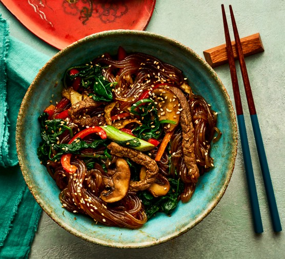

Japchae is a very popular dish served as a side or main in Korean restaurants all over the world. It’s packed with loads of vegetables and protein, and it’s versatile so you can enjoy it year-round with different seasonal vegetables.
Ingredients for 4 servings
- 4 tablespoons vegetable oil, divided
- 1 medium white onion, sliced
- 1 red bell pepper, seeded and sliced
- 2 carrots, thinly sliced
- 4 ounces spinach, washed and drained
- 10 oz fresh shiitake mushrooms, sliced
- salt, to taste
- 12 oz boneless steak, thinly sliced
- 4 tablespoons brown sugar, divided
- 7 tablespoons soy sauce, divided
- 1 tablespoon sesame oil, plus 1 teaspoon, divided
- 7 garlic cloves, minced, divided
- 2 large eggs, beaten
- 6 cups water
- 8 oz sweet potato noodles
- 1 teaspoon black pepper
- 2 tablespoons white sesame seeds
Preparation
- Heat 1 tablespoon of oil in a large pan over medium-high heat. Add the onion and sauté until fragrant, about 2 minutes, then add the carrots and bell pepper and sauté for about 3 minutes, until starting to soften. Transfer the sautéed vegetables to a bowl.
- Heat another tablespoon of oil in the same pan over medium-high heat. Add the mushrooms and sauté until softened and light golden, about 3 minutes. Season with a pinch of salt, then transfer to a bowl.
- Heat another tablespoon of oil in the same pan over medium-high heat. Add the steak and season with 1 tablespoon brown sugar, 1 tablespoon soy sauce, 1 teaspoon sesame oil, and 3 minced garlic cloves. Cook for about 1½ minutes, until lightly browned, then transfer to a bowl.
- Add ½ tablespoon of oil to the pan and sauté the spinach over medium heat until wilted, about 3 minutes, then transfer to a bowl.
- Heat the remaining ½ tablespoon of oil in the pan over medium heat, then pour in the beaten eggs and cook until the bottom is set, about 1 minute. Flip and cook until well-done, about 3 minutes more. Remove the egg from the pan and slice into 1-cm-thick strips.
- Meanwhile, add the water to a large pot and bring to a boil. Once boiling, turn off the heat and add the sweet potato noodles. Let soak for about 6 minutes, or until the noodles are pliable and chewy. Drain the noodles, then cut them with kitchen shears into shorter pieces.
- In a small bowl, mix together the remaining 3 tablespoons brown sugar, 6 tablespoons soy sauce, 1 tablespoon sesame oil, 4 minced garlic cloves, and the black pepper.
- To assemble, in a large bowl, toss the sweet potato noodles, mushrooms, onions, peppers, carrots, spinach, egg strips, and beef with the sauce until well combined. Garnish with the sesame seeds.
- Enjoy!